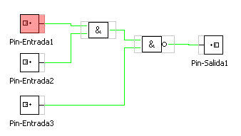
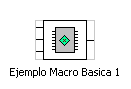
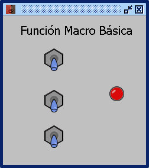
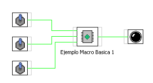

Operadores Numéricos: CONECTOR DE ENTRADA
Este objeto permite conectar una entrada en un subcircuito.
Los conectores de entrada deben ser definidos segun el tipo de variavle que envien al módulo Propiedad DT Input-pin

Este es el esquema del modulo VM al que se han concectado los pines de entrada y salida y se ha grabado con la opcion Grabar como Módulo.

Este módulo se añade a la coleccion de funciones de usuario y desde alli lo podemos usar.